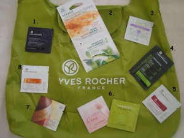

Tak dneska po delší době opět drogový speciál, tentokrát na téma Yves Rocher :-)… Vlastně to všechno začalo strašně nevinně – v některém z březnových magazínů Ona Dnes se objevila pravidelná série slevových kuponů do různých obchodů. Ještě nikdy jsem žádný z nich nevyužila, ale tentokrát tam byly docela fajne slevy – na 1 vybraný výrobek z YR dokonce 50% a dárek k tomu, prostě nekupte to :D! To jsem zkrátka musela i já – zarytý odpůrce YR obchodů – odhodit svůj stud. Příjemně naladěna poslední konzultací, která mě naprosto překvapila, rozhodla jsem se, že se za svůj malý osobní úspěch půjdu tedy odměnit. Věděla jsem přesně, pro co jdu – již v minulosti odzkoušené heřmánkové odličovací mléko, krásně voňavé a 100%ně přírodní, původní cena 155 káčé. Vlezla jsem tedy do obchodu již předem obrněna připravenými větami k odhánění dotěrných prodavaček. Nakonec jsem je ale vlastně vůbec nepotřebovala, prodavačky mě nechaly v klidu vybrat, navíc v obchodě byla ještě jedna paní, které se mohly věnovat. Trochu mě znervózňoval jen sekuriťák u vchodu :D… Chvilku jsem se rozhlížela, pak jsem popadla mlíko a zamířila k pokladně. Při placení jsem se nechala samozřejmě uvrtat do zřízení věrnostní karty (stává se z toho pomalu takový můj sport – kolik věrnostních karet máte vy? Já asi patnáct :DD…) a v důsledku toho jsem dostala plátěnou YR tašku, milion katalogů a letáků se slevovýma kuponáma a asi dva miliony vzorečků… jo a 2 pytlíčkový čistící masky jako dárek ke kuponu z Ona Dnes :D. Ano, byl to fakt příjemný nákup :D. Po cestě domů jsem přemýšlela, jestli se tak šťastně usmívám kvůli hodnocení mé práce, krásnému jarnímu dni nebo proto, že jsem opilá YR rohlíkem – respektive všema těma blbostma, které jsem v YR obdržela :D. Na to, jak tyhle typy obchodů nemám ráda, mě jejich strategie docela dostala. Doma jsem se tedy jala všechny nové produkty postupně odzkoušet a odhalit jejich klady a zápory. Tady jsou výsledky mého asi 2měsíčního testování :D…

1. Vyhlazující make-up (odstín Beige 300 – Teint Médium) – jak již název napovídá, odstínem se mi YR zrovna dvakrát netrefili do vkusu – jsem přecejen ještě po zimě dost bledá (a ne že by se to v létě nějak radikálně měnilo :D). Jinak si ale myslím, že na někom s opálenější pletí by mohl vypadat moc dobře. Pleť hezky sjednotí a rozzáří, pěkně voní, výdrž a krytí taky není vůbec špatné. Musí se ale hodně rychle roztírat, aby nevytvořil mapy. Nepřišel mi zlý, nicméně přestože netuším kolik přesně stojí, jsem si jistá, že v drogérce určitě seženete stejně kvalitní make-up za mnohem nižší cenu.
2. DUO: Rostlinná čistící gomáž a jemná čistící maska s výtažkem z máty – jako první jsem testovala čistící gomáž (neboli peeling, kdybyste to nevěděli – já to třeba nevěděla :D). Docela jsem se bála použít to na obličej, protože na tyhlety věci je moje pleť citlivá a reaguje podrážděním. Vyzkoušela jsem to nakonec asi dvakrát, poprvé jsem neviděla žádný velký výsledek, krom zarudnutí, podruhé mi přišlo, že pleť se hezky vyhladila a vyčistila, každopádně zbytek gomáže jsem už použila na tělo – proč obličej zbytečně trápit, když mám jen jeden, že. Stejnou službu mi prokáže celá řada jiných a šetrnějších výrobků. Gomáž nemá vpodstatě žádnou vůni a celkově mě nijak zvlášť nezaujala. Určitě je to výrobek, bez kterého bych se s klidem obešla :-)… Nicméně balení je poměrně poctivé a kdybych ho používala čistě jen na obličej, vydržel by mi na hoooodně dlouhou dobu.
Maska poněkud rozpačité dojmy z gomáže vylepšila. Má velmi tekutou konzistenci, je úplně čirá a hlavně moc hezky voní. Spíš než mátu z ní cítím citrusy, ale možná je to jen projev mé citrusové posedlosti :D. Na obličeji je příjemná, neštípe ani nepálí a poměrně rychle zasychá. Sloupávání je pohodové – rozhodně žádná nedobrovolná depilace jako onehdy u masky z HaMka :D!
3. Noční péče o pleť – tento výrobek mě příliš nezaujal. Vůně nic moc a v ostatních ohledech spíše průměr. Pleť ale byla po jeho použití hezky heboučká, takže aspoň za to dávám bod :-).
4. Zeštíhlující péče s trojím účinkem – trojím účinkem můžeme rozumět boj proti celulitidě a zeštíhlující + zpevňující účinek. Péče obsahuje zrnka zelené kávy, zelený čaj a výtažky z pupečníku asijského, má karamelovou barvu a gelovou konzistenci. Voní lehce a svěže, nejvíc jsem z ní cítila asi ten zelený čaj. Vstřebává se přímo bleskurychle, to tedy klobouk dolů, něco takového jsem ještě neviděla :D. Gel je sice při natírání lehce lepivý, ale okamžitě se vsákne a už ho na pokožce vůbec necítíte. Zpevňující účinky po sotva dvou použitích nemůžu moc posoudit, každopádně pokožka byla opravdu nádherně hlaďoučká. Ale nemůžu říct, že by to byl tak mimořádný efekt, aby se ho nedalo docílit i jinými zpevňujícími krémy z drogérie, které stojí asi desetkrát míň :D.
5. Denní zpevňující péče na obličej a krk – z mého pohledu celkem obyč krém ne příliš lákavé vůně. Při bližším pohledu do zrcadla zjistíte, že obsahuje drobné třpytky, ale není to tak výrazný efekt, aby si vás na ulici spletli s disko-koulí. Zpevňovat obličej snad ve svém věku ještě nepotřebuju :D, takže popojedem…
6. Toaletní voda pro ženy L’Eau + Toaletní voda pro muže Green – já na ty květinkové vůně nějak zvlášť nejsem, ale tato mi (aspoň podle vzorečku) přišla taková lehká, takže bych ji na sobě klidně snesla. Zato pánská vůně, ta mě tedy nezaujala bohužel vůbec ničím, přišla mi tak totálně tuctová, že ani nevím, k čemu bych ji přirovnala.
7. Oční krém proti vráskám s blahodárnými oleji – moje premiéra s očním krémem, protože věřím tomu, že ve svém věku ho ještě nepotřebuju, to už bych se moc rozmazlovala :D. Krém má lehkou, téměř až vodovou konzistenci, je téměř bez parfemace – má jenom lehoulinkou, ale moc příjemnou vůni, při které se dobře usíná (potvrzeno :D). Stačí ho opravdu jen kapka, takže i ten mini vzorek mi vydržel snad na týden, ne-li na dýl. Na víčkách je hrozně příjemný, lehce chladí a hlavně oči vůbec nedráždí. Redukci vrásek však zatím nemůžu potvrdit :D.
8. Denní rozjasňující krém – tento výrobek mě mile překvapil. Krém je lehký, má neutrální vůni a pleť opravdu krásně rozjasní, vypadá pak tak odpočatě a zdravě :-)! V rozjasňovačích se moc nevyznám, doteď jsem je pokládala za naprostou zbytečnost, ale cosi na nich zřejmě opravdu bude O:-)… Kdybych si měla vybrat jeden z vzorkových výrobků, který bych si pořídila i ve standartní velikosti, byl by to rozhodně tenhle. Předpokládám však, že určitě nestojí míň než čtyři stovky, takže asi někdy příště :D…
Takže suma sumárum – YR prodává zajímavé rozmazlovače, které určitě stojí za vyzkoušení, nicméně myslím, že jejich výrobky se dají nahradit mnohem levnějšími alternativami, i mezi jinou přírodní kosmetikou. Jejich obchodní strategie se vzorečkama a dárečkama a slevovýma kupónkama je každopádně docela dobrá… ehm, ale o tom raději zase někdy příště :D…


")


{kind=link}
{kind=link}
{kind=link}
{kind=link}
{kind=link}